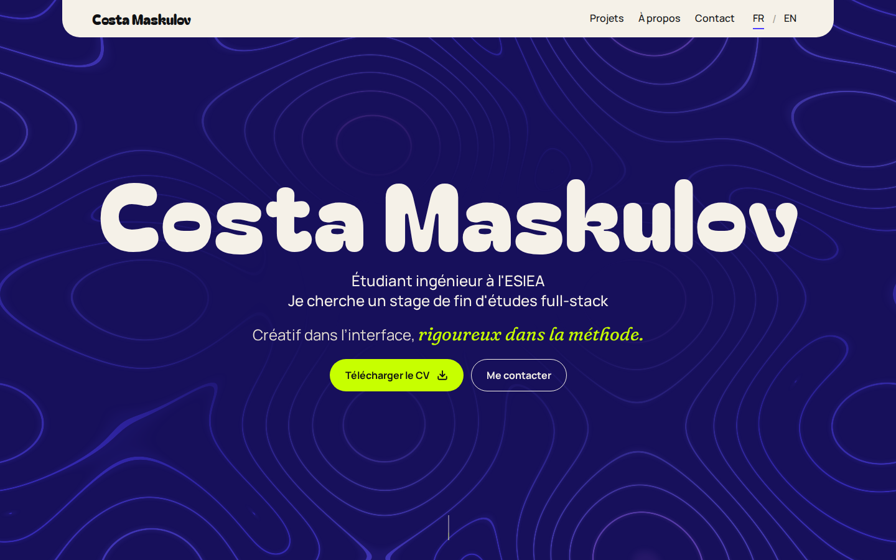
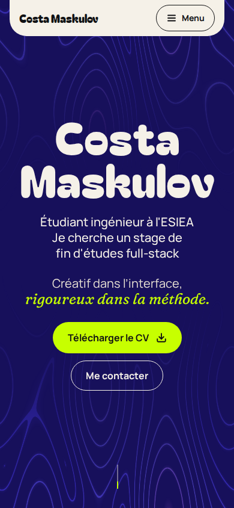

Ce portfolio
Le site que vous lisez, conçu comme un produit : du PRD au code, chaque étape documentée et validée avant la suivante.
- Type
- Projet perso
- Rôle
- Conception, design et développement
- Durée
- Depuis octobre 2026, en cours
- Équipe
- Seul
- Stack
- Vue 3 · TypeScript · Vite · GSAP · Docker

Contexte
Étudiant ingénieur à l’ESIEA, je cherche un stage de fin d’études en développement full-stack.
Jusqu’ici, je me présentais avec un CV, LinkedIn et GitHub. Ces supports listent des compétences, mais ne montrent ni ma méthode, ni ma créativité, ni qui je suis : rien ne permet à un recruteur de me reconnaître.
Besoin
Un seul support qui rende visibles la rigueur d’un ingénieur, la créativité d’un développeur web et ma personnalité.
Deux lecteurs à servir. La recruteuse RH, qui trie vite et sans bagage technique, doit comprendre le profil et récupérer le CV en un clic. Le tech lead veut lire une étude de cas, comprendre les choix et ouvrir le code.
Contraintes
- Budget : 0 €Aucun service payant.
- Auto-hébergéSur mon serveur personnel (Proxmox), dans un conteneur Docker, derrière Nginx Proxy Manager.
- RéférencementDes pages pré-rendues, en français et en anglais.
- AccessibilitéWCAG 2.2 niveau AA ; toutes les animations respectent « réduire les animations ».
- Temps variableMa disponibilité change d’une semaine à l’autre : le travail est découpé en petites étapes livrables.
Méthode
Sept phases, dans l’ordre, chacune avec son livrable, sa branche Git et sa validation avant de passer à la suivante.
- PRDCe qu’on construit et pourquoi
- Territoire de marquePositionnement, valeurs, ton de voix
- Direction artistiqueCouleurs, typographie, mouvement
- Architecture et UXArborescence, parcours, wireframes
- Design systemTokens et composants, avec leurs états
- MaquettesLes écrans clés, construits en code
- CodeL’intégration en Vue
Les maquettes sont faites directement en code, avec les vrais composants : chaque choix visuel se fait sur une page où l’on bascule entre plusieurs versions, dans le navigateur.

Choix techniques
Un design system avant les écrans
24 composants spécifiés (rôle, états, clavier, animation), tous construits sur des tokens : aucune valeur en dur.
Compromis : plus de temps avant le premier écran, moins de retouches ensuite.
Le fond animé en WebGL natif
Les courbes de niveau de l’accueil reprennent un composant écrit pour une bibliothèque 3D, réécrit en WebGL 2 sans elle : une dépendance de moins. Image fixe en mouvement réduit, pause hors de l’écran.
Compromis : un shader à maintenir soi-même.
Tout auto-hébergé
Polices servies par le site, conteneur Docker sur mon serveur, analytics sans cookies : aucun service tiers, pas de bandeau de consentement.
Compromis : la disponibilité dépend de mon serveur.
Vue 3, Vite et TypeScript
Pages pré-rendues pour le référencement ; le choix entre Nuxt et un pré-rendu Vite se fera à l’architecture technique.
Résultats
Les scores Lighthouse, visés à 95 ou plus sur les quatre axes, seront ajoutés à la mise en ligne.
Enseignements
- Comparer plutôt que décrireDécider devant deux à six versions affichées va plus vite que débattre sur un document.
- Garder sa méthodeUn assistant de design automatique a été essayé deux fois, puis retiré : il imposait son propre déroulé à un projet qui avait déjà le sien.
- Écrire les décisionsUne ligne et une raison par décision : on ne revient pas deux fois sur le même choix.